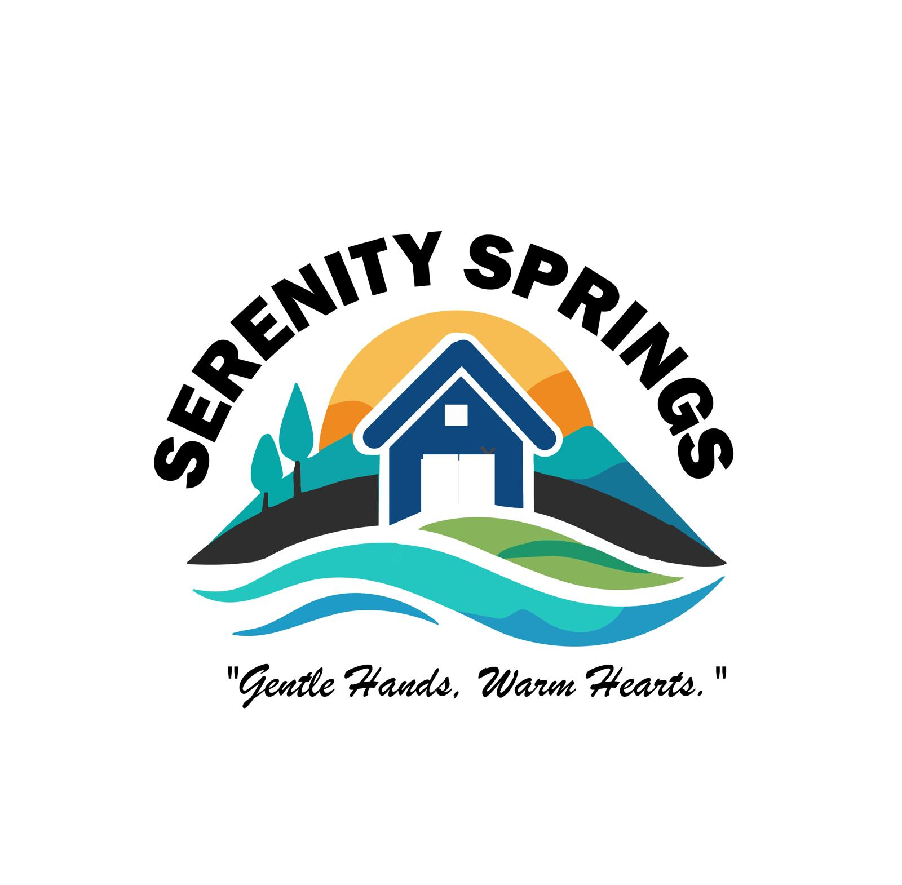

SERENITY SPRINGS
HOMECARE PLUS
OUR SERVICES
- We at Serenity springs home plus recognize the importance of caring for the elderly and understand that choosing a home for you and your loved one is a crucial decision. Here is what sets us apart and makes families in Kansas trust us with their loved ones
- We are a family-owned and operated assisted living facility, with over 20 years of combined experience in health care, particuralry working with the lederly. We are committed to your needs as well as building a relationship that results in satisfaction.
- Our caregivers are highly trained and understand that different residents have different care requirements
- Each residents care plan is personalized and specificto each residents' needs.
- Our home environment is comfortable, and residents are kept at peace, which contributes to the families peace of mind.